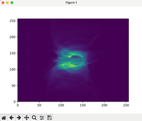

Characterizing near-infrared thermal emissions from Sagittarius A*. Visualizing magnetohydrodynamic simulations and time series data with photon trajectories near black holes. Supervised by Dr. Sean Ressler.

Analysing the spin evolution of black holes within the convective core of a star. Designing simulations to represent quasi-star evolution. Supervised by Dr. Yanlong Shi.

Python-based workflow with Lightkurve to extract and analyse data from NASA’s space telescopes, TESS and Kepler. Identified exoplanets by applying transit light curve methods.

Rube Goldberg inspired machine consisting of 7 mechanical mechanisms to dispense whipped cream. Paired with a report quantifying the physics and recorded measurements of the machine. Over 50% success rate.